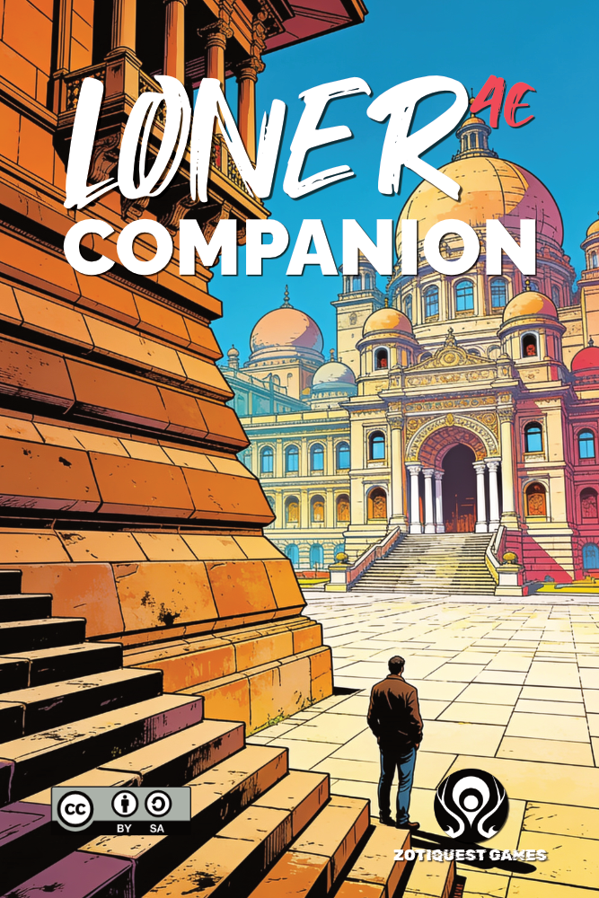
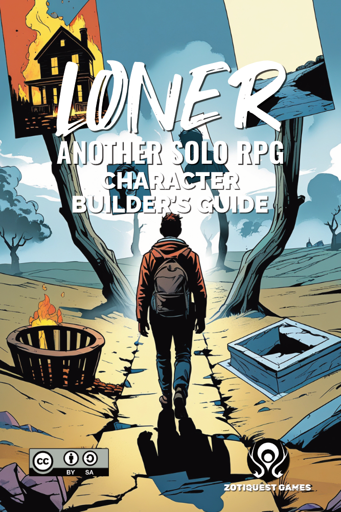
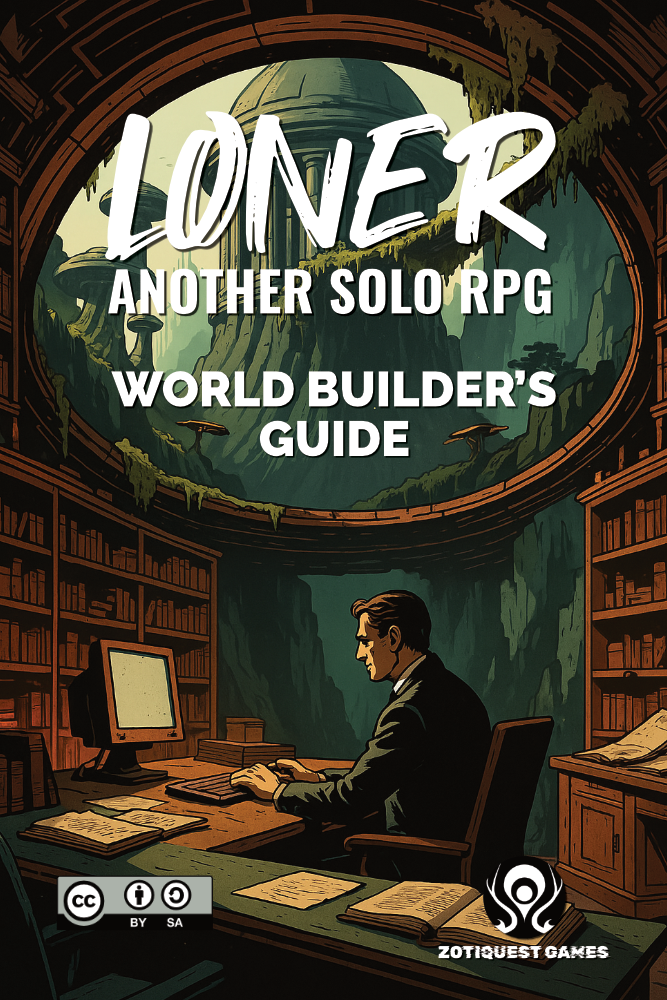
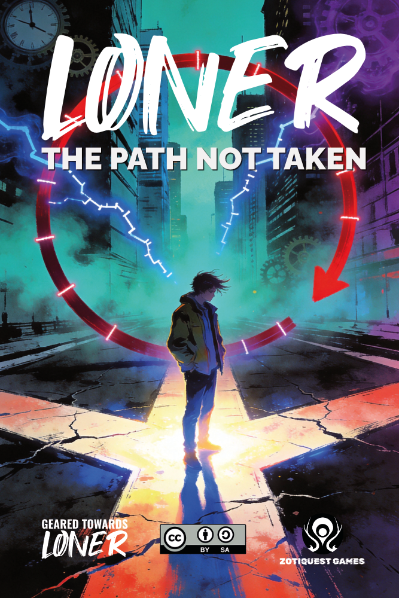

Core Rules
What Is Loner?
Loner is a solo role-playing game built to tell stories with minimal rules and maximum flexibility. It began as a short 10-page document, just enough to play without prep, and has since grown into a complete edition supported by a range of supplements.
At its heart are two simple tools:
Short, descriptive phrases like Skilled Pilot, Merciful, or Broken Compass. Tags describe who your character is, what they carry, and what matters in the world.
Two dice rolled against each other to answer yes/no questions, often with modifiers like and… or but…. The Oracle introduces twists, uncertainty, and surprise.
Together, these keep the focus on fiction first. You don't calculate bonuses or compare stats, you ask questions, roll, and let the story emerge.
How It Works
Think of Loner as a cycle:
The Books




